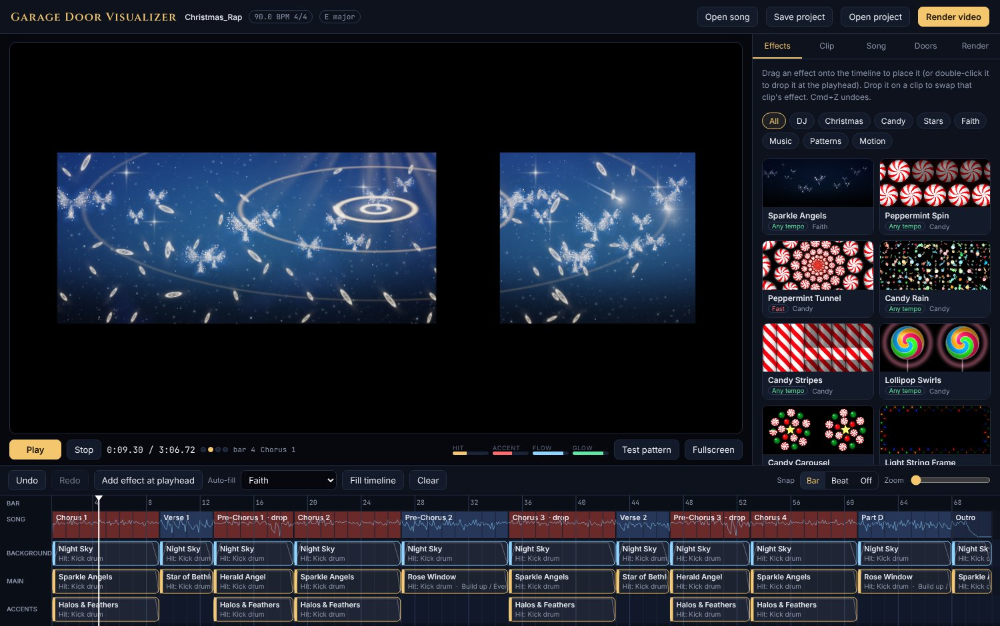

Garage Door Visualizer
Music-reactive light shows for projection-mapped garage doors.
The browser version works in Chrome or Edge on any computer. Nothing you load is uploaded anywhere.

How it works
- Drop in a song. It finds the beats, bars, drums, bass, melody, vocals and song parts in a few seconds.
- The timeline fills itself: verses, choruses and drops get their own looks.
- Drag effects onto the timeline and pick what each one reacts to: downbeats only, the kick, the melody, the vocals and more.
- Render a video for each door, or both doors in one mapped video.
66 effects
- DJ lights: lasers, moving heads, strobes, mirror ball
- Christmas lights: C9 swags, light-string frames, spiral trees, bokeh
- Candy: peppermints, candy stripes, lollipops, candy rain
- Stars, sparkle angels, nativity, snowflakes, piano keys, kaleidoscopes
First time opening the Mac app
The app isn't signed with a paid Apple developer certificate, so macOS asks once.
- Open the .dmg and drag Garage Door Visualizer into Applications.
- Open it. When macOS says it can't verify the app, click Done.
- Go to System Settings, Privacy & Security, scroll down and click Open Anyway.
If macOS says the app is damaged, run this once in Terminal: xattr -dr com.apple.quarantine "/Applications/Garage Door Visualizer.app"